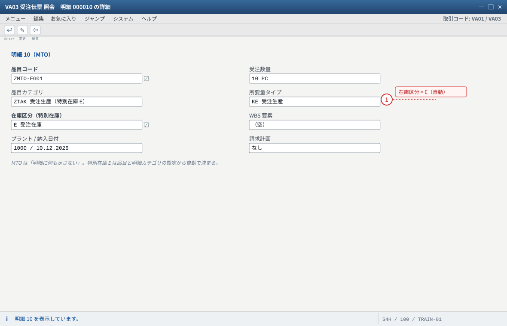
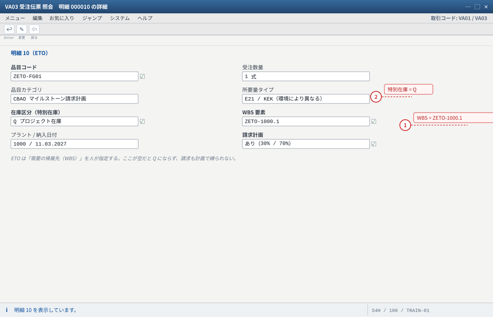
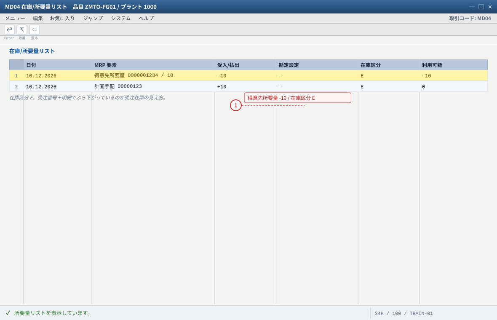
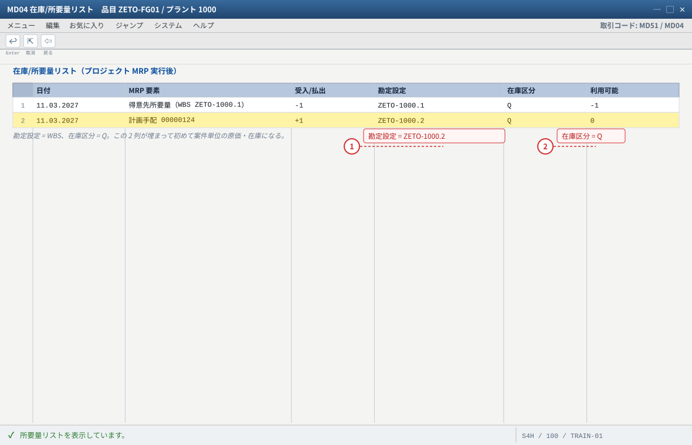
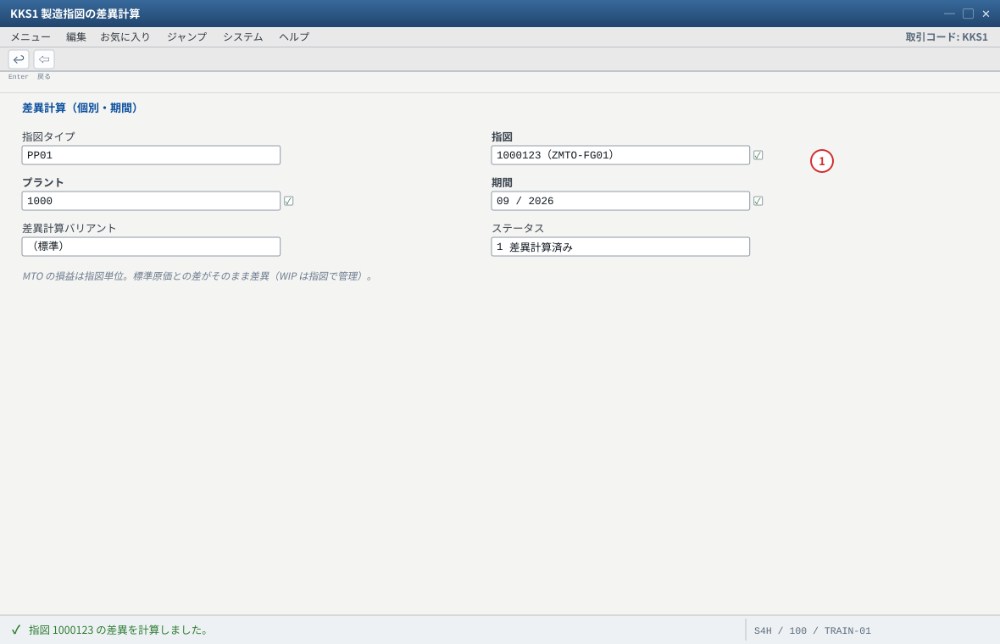
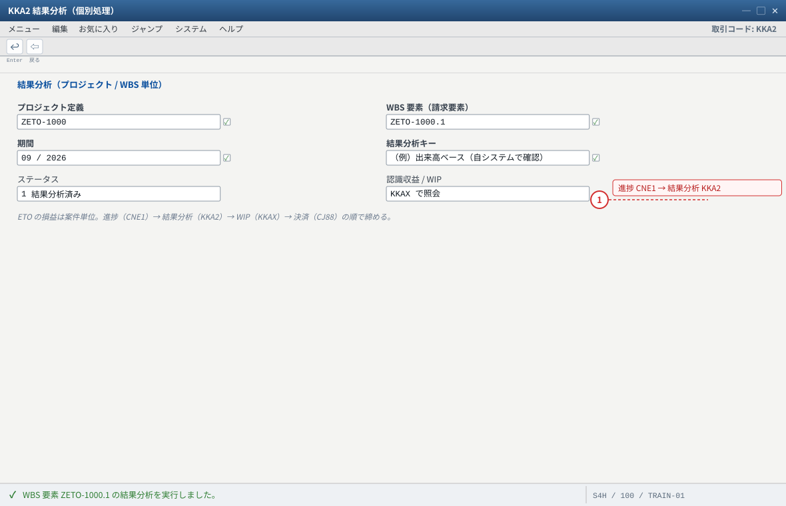
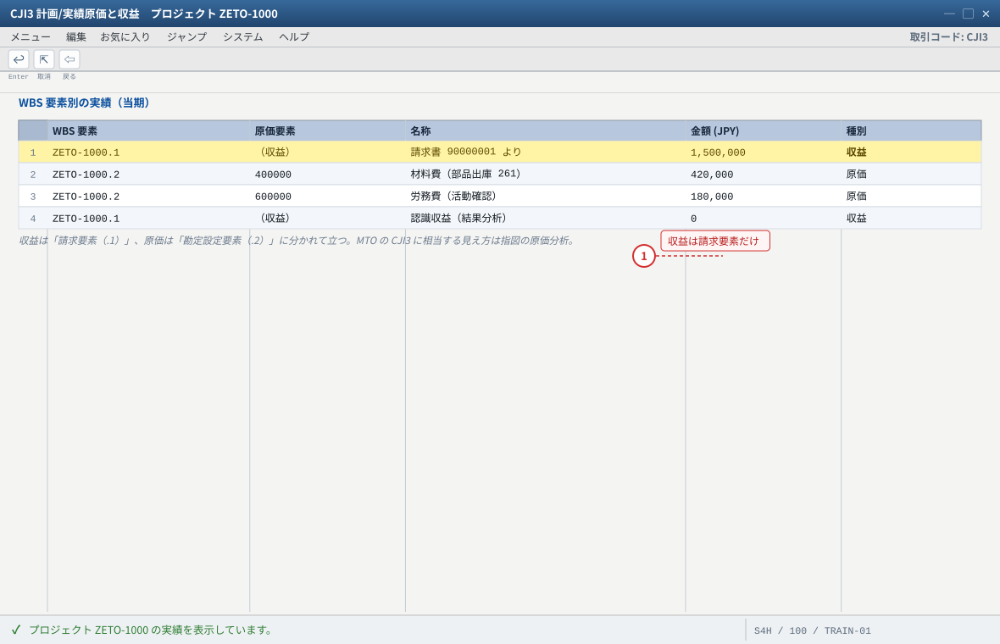
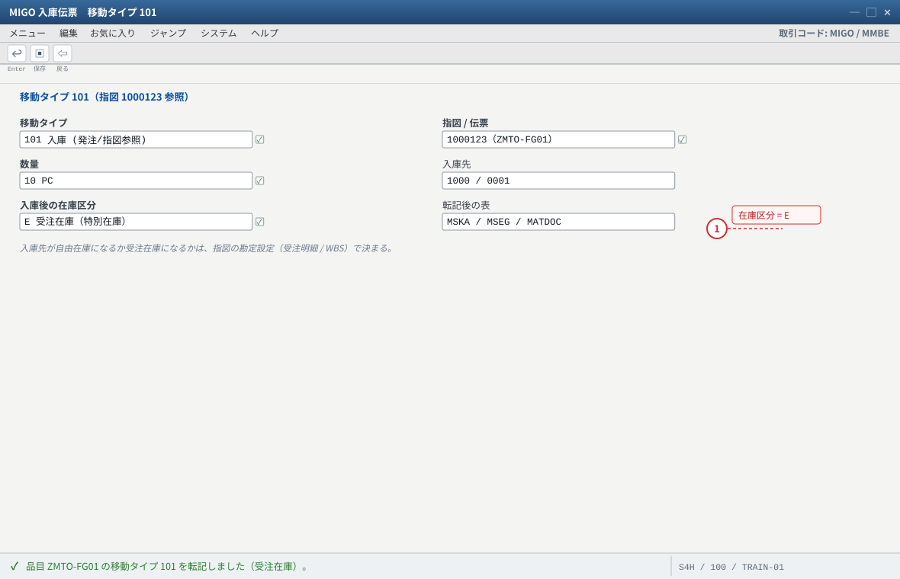
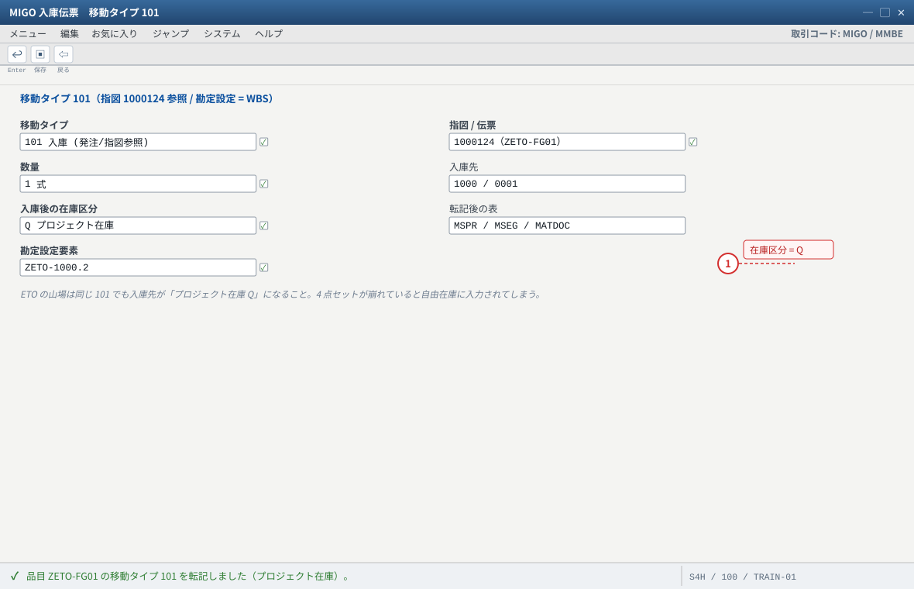

E vs Q 对照：同じ 1 件の受注を 2 通りで走らせる
.png 放进 assets/gui/ 后执行 python3 tools/swap_gui_images.py <site> --apply 即可一键替换。共通のシナリオ（どちらも同じ商流）
得意先 1000 → 特注品 ZMTO-FG01 / ZETO-FG01 を 10 台（または 1 式）受注
難易度：受注 → 設計/製造 → 完成 → 出荷 → 請求（分割請求は ETO 側のみ）
（A）MTO で組む場合 : 品目 = 個別所要量品目（MRP4 個別所要量）、戦略 20、明細カテゴリの特別在庫 E
（B）ETO で組む場合 : 品目 = 個別所要量品目（同じ）、戦略（Cloud E2）、WBS を作り受注明細に割当、
プロジェクト定義で評価付プロジェクト在庫 ON、請求計画で 30%＋70%
STEP 対照表（一致点と相違点）
| STEP | MTO（E）のやること | ETO（Q）のやること | 同じ / 違うの本質 |
|---|---|---|---|
| 0 品目マスタ | FERT・MRP1 PD/EX/E・MRP4 個別所要量・戦略 20 | 同じ 3 点 ＋ 戦略グループ（Q 系）・会計ビューの評価クラス | 同じ土台（個別所要量品目）。ETO は「Q を指す戦略」が加わる |
| 1 事前準備 | （不要） | CJ20N でプロジェクト＋WBS（請求要素/勘定設定要素）＋ 評価付在庫 ON ＋ ネットワーク | 完全に違う：ETO だけが「案件の器」を先に作る |
| 2 受注 | VA01：得意先・品目・数量・納期のみ。明細カテゴリは VOV4 が決める | VA01：＋明細に WBS 要素を入力（＋請求計画） | 違う：ETO は需要の帰属先（WBS）を人が指定する |
| 3 需要の確認 | MD04：得意先所要量（受注番号＋明細付き） | MD04：得意先所要量（WBS 付き） | 同じ画面・違う帰属。ここで「どちらに紐づいているか」を見る癖をつける |
| 4 MRP 実行 | MD01N / MD02（単品目） | MD51（プロジェクト）/ MD50（受注）/ MD01N | 入口が違う（ETO はプロジェクト単位で回せる）。結果は同じく MD04 で見る |
| 5 計画手配 | 在庫区分 = 受注在庫 E、受注番号付き | 勘定設定 = WBS、在庫区分 = プロジェクト在庫 Q | ここが分岐点。以降の入出庫・評価・成本が全部これに従う |
| 6 製造指図 | CO08（受注紐づき）/ 計画手配から変換。受注明細参照 | CO40/CO08。勘定設定 = WBS（AUFK-PS_PSP_PNR） | 指図は同じ道具、指図が「誰のものか」が違う（受注明細 vs WBS） |
| 7 部品出庫・実績 | MIGO 261 ／ CO11N | 同じ（＋ネットワークなら CN25 で活動確認） | ほぼ同じ。ETO は「活動」という工数の受け皿が増えるだけ |
| 8 完成品入庫 | 101 → MSKA（受注在庫 E） | 101 → MSPR（プロジェクト在庫 Q） | 違う表に入る。画面は MMBE でどちらも「特別在庫」欄に表示されるため、表で確認する |
| 9 出荷 | VL01N（在庫区分 E）→ PGI 601 | VL01N（在庫区分 Q ＋ WBS）→ PGI 601（または CNSO＝Delivery from Project） | 操作は同じ・引当先が違う |
| 10 請求 | VF01（出荷ベース F2） | VF01（請求計画/出来高が主。着手金 30% ＋ 完成 70%） | 收钱的方式不同：出荷した分だけ vs 契約に沿って分割 |
| 11 月末処理 | 指図の差異計算 KKS1 → 指図の決済 KO88（受注明細へ） | 進捗 CNE1 → 結果分析 KKA2/KKAJ → WIP KKAX → 決済 CJ88（WBS） | 一番差が出る：MTO は指図の損益、ETO は案件の進捗損益（WIP と認識収益） |
| 12 レポート | MD04・MMBE・VBBS・指図の原価分析 | CJI3（WBS の実績）・CJ31（予算）・CJIB・CJIC（決済明細） | 見る帳票が違う。ETO は「WBS 単位の予実」、MTO は「受注明細/指図単位」 |

- 1 MTO は人が入力する欄がない＝設定がすべてを決める
自システムでの確認：明細の特別在庫区分は VA03 の明細詳細 → 出荷 / 在庫区分。または VBAP の SOBKZ を SE16N で。

- 1 WBS を割り当てる＝需要・原価・収益がこの案件に集まる
- 2 収益を立てるには請求要素であること
自システムでの確認：WBS を割り当てられる明細カテゴリは限定されます（VOV7 と Cloud の交付済みカテゴリ）。Cloud の例は SAP Help（販売伝票の企業ポートフォリオ…）の CBAO。

- 1 MRP 要素の「得意先所要量」が受注由来の需要
自システムでの確認：MTO は MRP4 の「個別/包括所要量 = 個別所要量のみ」＋ 戦略グループが前提。MD04 の MRP 要素に受注番号が出ていれば個別需要として処理されています。

- 1 勘定設定 = WBS（原価の集まる先）
- 2 在庫区分 = Q（プロジェクト在庫）
自システムでの確認：プロジェクト/受注単位の MRP は MD51 / MD50。結果は MD04 で確認し、勘定設定が空なら「評価付プロジェクト在庫」と「受注明細の WBS」を疑います。
まとめ：一致する部分 / 決定的に違う部分
一致する部分（ここを押さえると学習が速い）
- 決定链の骨格：品目マスタ → 戦略グループ → 所要量タイプ → 所要量クラス（個別在庫の有無）
- 品目マスタ MRP4「個別/所要量」＝ 個別所要量のみ（個別所要量品目の前提）
- 移動タイプ 261 / 101 / 601 と PGI の考え方
- MD04 で需要と補貨を読むこと、MMBE で特別在庫を見ること
- 請求伝票（
VF01）と伝票フローの読み方 - 「設定が足りないと自由在庫に落ちる」という故障の型
決定的に違う部分（＝試験でも現場でも問われる）
- 帰属先：受注明細（E）vs WBS（Q）
- 在庫テーブル：
MSKAvsMSPR - 前提設定：明細カテゴリの特別在庫 E vs 評価付プロジェクト在庫＋WBS 割当
- 成本の対象：製造指図 vs WBS（＋指図）
- 收钱：出荷ベース vs 請求計画/出来高
- 月末：差異計算・指図決済 vs 進捗・結果分析・WIP・WBS 決済
- 帳票：
MD04/MMBEvsCJI3/CJ31
期末（月末）の見え方の違い
| 論点 | MTO（E） | ETO（Q） |
|---|---|---|
| まだ出荷していない完成品 | 受注在庫（E）として残高（評価付なら金額も） | プロジェクト在庫（Q）として残高（評価付なら金額も） |
| 進行中の仕掛 | 指図の WIP/差異（KKAO・KKS1・KO88） | WBS の WIP と認識収益（KKA2・KKAX・CJ88） |
| 売上の立ち方 | 出荷（PGI）した分が売上 | 請求計画/出来高＋結果分析（POC なら進捗に応じて収益認識） |
| 予算管理 | 通常は行わない（指図/受注は原価対象） | WBS 予算＋可用性管理（CJ30/CJ32/CJBV） |
| 意思決定に使う帳票 | 受注の粗利・指図の差異分析 | WBS の予実（CJI3/CJ31）＝案件の採算 |

- 1 標準原価と実際原価の差＝差異。決済（KO88）で受注明細へ
自システムでの確認：差異が出ない場合は指図に標準原価が入っているか（CO03 の原価項目）を確認してください。

- 1 進捗を入れてから実行する（無いと認識されない）
自システムでの確認：結果分析キーは OKG9 系のカスタマイジング。WIP は KKAX、決算は CJ88（WBS）/ KO88（指図）/ VA88（受注）。

- 1 収益が立たない時は「WBS が請求要素か」を最初に見る
自システムでの確認：収益が出ない場合は ① WBS が請求要素か ② 受注明細に WBS が入っているか ③ 請求書が WBS を持っているかを順に確認します。
実機で両方を作る（最小手顺・各 30〜40 分）
| # | MTO（E）— 詳細は ../sapmto/ | ETO（Q）— 詳細は ../sapeto/ |
|---|---|---|
| 1 | 品目 ZMTO-FG01：MRP4 個別所要量・戦略 20・手配タイプ E | 品目 ZETO-FG01：MRP4 個別所要量・戦略（Q 系） |
| 2 | （不要） | CJ20N：プロジェクト＋WBS 3 件・評価付在庫 ON・請求要素 |
| 3 | VA01：受注（数量 10）＋ 明細カテゴリ確認 | VA01：受注（1 式）＋ 明細に WBS ＋ 請求計画 30/70 |
| 4 | MD01N/MD02 → MD04：計画手配（在庫区分 E） | MD51 → MD04：計画手配（勘定設定 WBS・在庫区分 Q） |
| 5 | CO08 → 261 → CO11N → 101（MSKA） | CO40/CO08 → 261 → CO11N → 101（MSPR） |
| 6 | VL01N（E）→ PGI → VF01（出荷ベース） | VL01N（Q）→ PGI → VF01（請求計画） |
| 7 | KO88（指図決済）＋ MD04/MMBE で確認 | KKA2→KKAX→CJ88＋ CJI3 で確認 |
| 8 | 並べて説明する：① 需要の帰属 ② 在庫の表 ③ 成本の対象 ④ 請求の仕方 ⑤ 月末の処理 —— 5 点を、資料を見ずに 5 分で。ここまでできれば E と Q は卒業。 | |

- 1 MTO の山場：入庫が受注在庫に入っているか
自システムでの確認：転記後の在庫は MMBE の「特別在庫」欄、表なら MSKA で確認します。

- 1 自由在庫に入ったら「評価付プロジェクト在庫」と WBS を確認
自システムでの確認：MSPR に数量行があるか。無ければプロジェクト定義の「評価付プロジェクト在庫」を確認します（SAP Help Valuated Project Stock の 3 前提）。
判別演習（8 問・解答は 讲师版）
- 受注 10 台・納期 2 か月・分割請求なし・設計は既存品の流用 → どちら（E / Q）？
- 得意先の工場に据え付ける特注ライン・着手金 30%・検収後 70% → どちら？
MMBEに「特別在庫 E、受注 0000001234/000010」と表示された。この受注はどの形態？- 計画手配の勘定設定が空で、在庫区分も空だった。最初に疑う設定は？
- 「
CJI3に収益が出ない」——最有力の原因は？ - 請求計画を登録せずに出荷ベースだけで請求したい。ETO でも可能か？
- 同じ品目を MTO と ETO の両方で使いたい。品目マスタで工夫できるか？
- 得意先が受注時に色と容量を選ぶ。MTO のままで対応できるか？